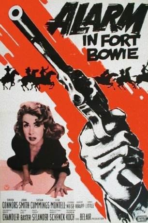

#4161 Alarm in Fort Bowie
Alternativ: Tomahawk Trail
 
 IMDB-Wertung: 5.6 / 10
IMDB-Wertung: 5.6 / 10  Metascore: 0
Metascore: 0 
Da Kavallerie-Leutnant Davenport aufgrund einer Verletzung unzurechnungsfähig wurde, muss der junge Sergeant Wade das Kommando über die Truppe übernehmen. Der Weg führt durch gefährliches Apachengebiet. Das in der Nähe liegende Fort Bowie scheint Sicherheit zu bieten. Was die Soldaten nicht wissen: Das Fort wurde bereits von den Rothäuten verwüstet. -
Jahr: 1957
Dauer: 59 Minuten
FSK: 12
Land: USA Studio: United ArtistsTonspuren: DD2.0 - ,
Untertitel:
Auflösung: 1080p (1440x1080) Größe: 5242 MB
Genre: Western
Regisseur: Lesley Selander
Drehbuch: Elena von Saucken
Soundtrack:
Darsteller:
 Chuck Connors als Sgt. Wade McCoy
Chuck Connors als Sgt. Wade McCoy- John Smith als Pvt. Reynolds
- Lisa Montell als Tula
- George N. Neise als Lt. Jonathan Davenport
 Eddie Little Sky als Johnny Dogwood
Eddie Little Sky als Johnny Dogwood- Susan Cummings als Ellen Carter
- Robert Knapp als Pvt. Barrow
- Frederick Ford als Pvt. Macy
Datei: X:\HD-Western-1900-1959\Alarm in Fort Bowie (1957, FSK12, 1440x1080).mkv seit 27.07.2016
Festplatte: HD Eastern+Western
 Es gibt insgesamt 98 Filme in der Gruppe 'HD-Western-1900-1959'
Es gibt insgesamt 98 Filme in der Gruppe 'HD-Western-1900-1959'